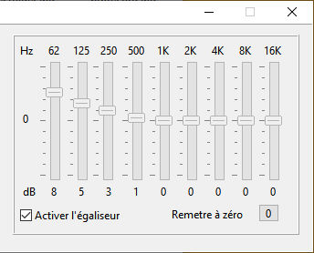

Web radio Tuner
Playing and recording Web radios
Cliquez pour l'aide en FrançaisDownload last version
Place the mouse cursor on an
element of the image to see its action's name.
Click on an element to go to the action's detailed description.
Click on an element to go to the action's detailed description.
CONTENT
Install
Using the program
The vu-meter and the volume
Radio recording
Uninstall
Notice
PURPOSE OF THE PROGRAM
The program can play and record the radio streams on the Web from their address (url).
INSTALL
Extract archive and execute InstallWebradio.exe, then follow the install program instructions. On the first use, the french radio France Inter is installed. You can add, change or delete radios with a click on the button.
To preset a radio, click on one of the preset buttons.
USING THE PROGRAM
ON regular conditions, the Web radio Tuner can be minimized in the notification area (tray). The program can only be closed with a right click on its icon and the Quit menu or in its main window by a click on the
 Quit
button or the Quit menu in the context menu.
Quit
button or the Quit menu in the context menu.DISPLAY
The radio's name is displayed on the first line. It is the name assigned to the radio during its creation when adding the radio to the radios list, or the name chosen by the broadcaster if it transmit it in the stream information. If the radio name is larger than the display, the name is scrolling to allow to see the entire text.
The radio's logo is displayed if the user has selected a logo file during the radio creation, or during a change of the radio in the list.
The playing sequence's title is displayed on the second display line, if the broadcaster transmit it in the stream information (meta tag).
The technical information are displayed at the last display's line:
Connection status and type. Stereo or mono, bitrate, sample frequency, recording and pause.
PRESETS BUTTONS
A radio is assigned to the button.
To change the preset, place the mouse cursor on the button and right click, then, in the popup menu and select, "Choose a radio in the list". To cancel the preset, place the mouse cursor on the button, right click, then in the popu menu, select "Delete the preset". The red number in a button means the preset radio is currently playing.

There is no radio assigned to the button.
To assign it a radio, place the mouse cursor on the button and right click, then, in the popup menu, select "Choose a radio in the list".
 just below the potentiometer can temporary mute
the sound.
just below the potentiometer can temporary mute
the sound.BUTTONS BAR
By default, the Web radio Tuner's standard interface is a buttons bar. The buttons bar cab be hidden (See Settings). In this case the commands are done via a popup menu (mouse right click on an area without buttons).

Ouvre un menu qui permet de sélectionner la radio à écouter

Ouvre la boite de sélection d'un fichier
Entrer l'adresse web (URL) dans le champ de saisie et cliquer
sur le bouton "OK" pour écouter la radio ou sur le bouton
"Annuler" pour annuler la lecture.
 Régler le niveau des 9 bandes de l'égaliseur avec les potentiomètres et cocher la case "Activer l'égaliseur" pour que ces réglages soient appliqués aux radios et aux fichiers lus.
Cliquer sur le bouton "OK" pour valider ou sur le bouton "Annuler" pour annuler ces réglages, les précédents réglages seront alors appliqués.
{kind=link}
Pour ajouter une radio,
cliquer sur le bouton  , puis entrez le nom de
la radio, son adresse Web (URL), un commentaire essentiel dans les
champs correspondants.
, puis entrez le nom de
la radio, son adresse Web (URL), un commentaire essentiel dans les
champs correspondants.
Pour ajouter un fichier logo, cliquez sur le bouton à droite du champ correspondant et sélectionnez le fichier désiré Les formats supportés sont JPG et PNG. Utiliser de préférence ce dernier format pour respecter les zones transparentes des images. Une copie du ficher dans le dossier "Images" propre au programme.
Validez la saisie en cliquant sur le bouton . Vous pouvez abandonnez l'opération en cliquant sur le bouton .
Pour modifier une radio, la sélectionner dans la liste et cliquer sur le bouton et entrez les données dans les champs (voir plus haut), puis valider ou annuler les modifications.
Pour supprimer une radio, la sélectionner dans la liste, puis cliquer sur le bouton . Vous devrez confirmer votre choix pour que la radio sélectionnée soit effectivement supprimée.
Lors qu'une radio est sélectionnée, la touche de présélection éventuelle est indiquée. Lorsqu'une radio est supprimée, la présélection éventuelle est également supprimée.
, puis entrez le nom de
la radio, son adresse Web (URL), un commentaire essentiel dans les
champs correspondants.Pour ajouter un fichier logo, cliquez sur le bouton à droite du champ correspondant et sélectionnez le fichier désiré Les formats supportés sont JPG et PNG. Utiliser de préférence ce dernier format pour respecter les zones transparentes des images. Une copie du ficher dans le dossier "Images" propre au programme.
Validez la saisie en cliquant sur le bouton . Vous pouvez abandonnez l'opération en cliquant sur le bouton .
Pour modifier une radio, la sélectionner dans la liste et cliquer sur le bouton et entrez les données dans les champs (voir plus haut), puis valider ou annuler les modifications.
Pour supprimer une radio, la sélectionner dans la liste, puis cliquer sur le bouton . Vous devrez confirmer votre choix pour que la radio sélectionnée soit effectivement supprimée.
Lors qu'une radio est sélectionnée, la touche de présélection éventuelle est indiquée. Lorsqu'une radio est supprimée, la présélection éventuelle est également supprimée.

 Ouvre
la fenêtre des Préférences
Ouvre
la fenêtre des PréférencesCette fenêtre permet de spécifier les principales préférences de fonctionnement du programme.
Passez le curseur de la souris sur un élément de cette image pour voir le nom de son action. Cliquez sur un élément pour aller à la description détaillée de son action.
Une fois les préférences choisies, cliquez sur le bouton "OK" pour les valider ou sur le bouton "Annuler" pour les abandonner.
Système
Lancer au démarrage du système : Cochez pour que le programme démarre automatiquement au démarrage du système.
Démarrer minimisé : Cochez pour que le programme démarre en icône dans la barres des tâches ou dans la zone de notification dans le cas où l'on a choisi de masquer l’icône dans la barres des tâches.
Masquer l’icône dans la barre des tâches : Cochez pour que l’icône du programme soit masquée lorsque ce dernier est minimisé. L’icône se trouve alors dans la zone de notification. Cliquez avec le bouton gauche de la souris sur cette icône pour afficher la fenêtre du programme ou cliquez avec le bouton droit pour afficher le menu du programme.
Sauvegarder la taille et la position de la fenêtre : Cochez pour sauvegarder la taille et la position de la fenêtre lors de la fermeture du programme.
Ne pas rechercher automatiquement de mise à jour : Cochez si vous ne souhaitez pas que le programme recherche automatiquement des mises à jour.
Afficher la barre des boutons : Cochez pour afficher la barre des boutons en haut de la fenêtre du programme. Par défaut, la barre des boutons est masquée.
Choisir la langue d'affichage : Sélectionnez la langue d'affichage du programme dans la liste déroulante. Ce choix n'a pas d'effet sur les indications fournies par la radio.
Choisir la police de caractères du nom de la radio : Sélectionnez la police de caractères d'affichage du nom de la radio. Par défaut la police DotMatrix est utilisée. Cette police n'a pas besoin d'être installée sur le système, elle est chargée en mémoire au démarrage du programme et supprimée à la fermeture du programme. Pour utiliser une autre police, sélectionnez une police installée sur le système dans la liste déroulante.
Couleurs
La couleur d'affichage des textes de l'écran, celle de son arrière plan, celle des textes du reste de la fenêtre et son arrière plan sont confiigurables. Choisissez une couleur prédéfinie dans les listes déroulantes, ou cliquez sur le bouton à droite de la liste pour choisir une couleur personnalisée.
Paramètres d'enregistrement
Format de fichier : Cliquez sur le bouton correspondant au format d'enregistrement souhaité. Le format WAV est spécifique à Windows, les paramètres sont définis à chaque enregistrement à l'aide d'une boite de dialogue affichée par le système, les réglages du programme ne sont pas pris en compte.
Débit : Choisissez le débit maximum de l'enregistrement dans la liste déroulante.Le débit le plus courant pour MP3 ou OGG est de 128 ou 196 kBits/s. Pour AAC, le débit courant est de 64 à 128 kbits/s
Fréquence d'échantillonnage : Choisissez la fréquence d'échantillonnage de l'enregistrement dans la liste déroulante. Les valeurs les plus courantes sont 44100 Hz et 48000 Hz.
Répertoire d'enregistrement : Sélectionnez le répertoire d'enregistrement des radios. Utilisez de préférence le sous répertoire "Webradio" de votre répertoire "Musique". Pour sélectionner un répertoire, cliquez sur le bouton à droite.

Ouvre l'aide du programme.

Ouvre la fenêtre "A propos"
Cette fenêtre donne des indications sur le programme (version, date de compilation), ainsi que divers liens importants.
Passez le curseur de la souris sur un élément de cette image pour voir le nom de son action. Cliquez sur un élément pour aller à la description détaillée de son action.
Mise à jour : Cliquez sur le texte pour vérifier si une nouvelle mise à jour est disponible. En principe la vérification est automatique si vous n'avez pas modifié la fonction dans la fenêtre de Préférences (voir ci-dessus).
Page d'accueil du site Web : Cliquez sur le texte pour aller à la page d'accueil du site Web de l'auteur.
Page d'accueil du programme : Cliquez sur le texte pour aller à la page d'accueil du programme.
Page d'accueil du code source : Cliquez sur le texte pour aller à la page d'accueil du code source. Le code source du programme est en source ouverte. Le fichier licensf.txt contient les informations de licence libre.
Cliquez sur ce bouton pour quitter le programme
ENREGISTREMENT D'UNE RADIO
Cliquez sur ce bouton pour enregistrer la radio en cours. En MP3, AAC et OGG, le fichier sera encodé avec les réglages enregistrés dans les préférences. En WAV (Windows uniquement) un dialogue de sélection des paramètres est affiché avant de débuter l'enregistrement.
L'image du bouton clignote pendant l'enregistrement et le temps d'enregistrement est affiché juste au dessus.
Cliquez à nouveau sur ce bouton pour arrêter l'enregistrement. Le fichier se trouve à l'emplacement choisi dans les préférences.
DÉSINSTALLATION
Utiliser le système de gestion de programmes du panneau de configuration pour désinstaller le programme.
NOTICE
Utilisez Tuner radio Web à vos risques et périls.
Licence OpenSSL http://www.openssl.org .
Le programme utilise les bibliothèques BASS de Un4seen (www.un4Seen.com).
Sources (Windows et Linux) disponibles à https://github.com/bb84000/